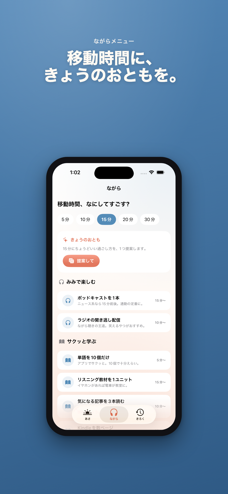
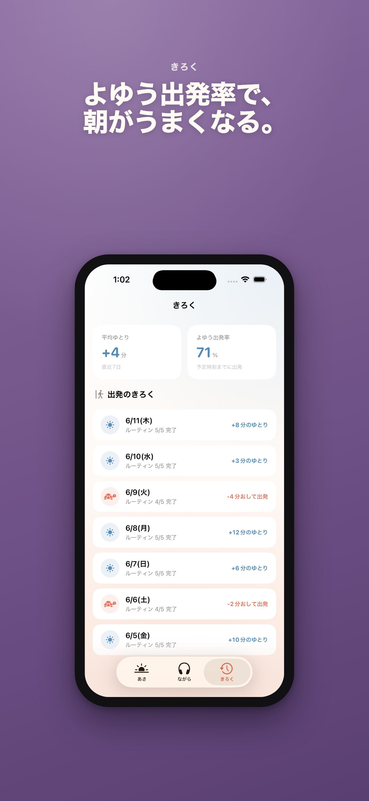

朝のゆとりが数字で見える。
出発時刻とルーティンを登録すると、いま何分の余裕があるかをリアルタイムに表示します。おでかけモードではロック画面とDynamic Islandに出発カウントダウンを出せます。
App Store公開準備中。ストアURLは審査通過後に追加します。



できること
±ゆとり分出発までの残り時間から、残タスクの所要時間を差し引いて表示します。
出発カウントダウンLive Activityでロック画面とDynamic Islandに残り時間を表示します。
オンデバイスアカウント登録なし。記録データは端末内に保存されます。